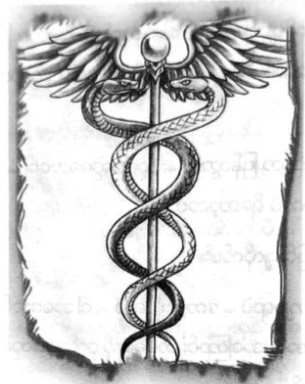

အသက်ကယ်သော မြွေနှစ်ကောင်
နယူးယော့ခ်ကို ပါစီ သဘောကျသည်။ ငရဲပြည်မှ ပြန်ရောက်လာပြီး စင်ထရယ် ပန်းခြံထဲသို့ ရောက်သည်နှင့် အငှားကားစီးကာ ခရီးဆက်နိုင်၏။ နောက်မှ ငရဲခွေးကြီး ခုန်ပေါက်လိုက်လာသော်လည်း မည်သူမျှ နှစ်ခါ မစပ်စုကြ။
ပြောရလျှင် မြူကြောင့်လည်း လူများက မစ္စအိုလာရီကို သေသေချာချာ မမြင်နိုင်ကြခြင်း ဖြစ်သည်။ မစ္စ အိုလာရီကို ဧရာမ ထရပ်ကားကြီး ဟုသာ ထင်ပုံရသည်။ အမေ့ လက်ကိုင်ဖုန်းကို သုံးကာ အန်နာဘတ်ထံ စွန့်စွန့်စားစား ဖုန်းဆက်လိုက်၏။ ပထမတစ်ကြိမ်က ငရဲပြည်အသွား ဆက်မရဘဲ ပြောချင်သမျှ ပြောပြထားခဲ့ရသည်။ ဒုတိယတစ်ကြိမ် တွင် ဖုန်းဝင်သွား၏။
“ဟေး … ငါ ပြောထားတာတွေ ကြားရလား …”
“နင် ဘယ်ရောက်နေတာလဲ ပါစီ … နင် ပြောထားသမျှ ဘာမှ အရေးကြီးတာလည်း မပါဘူး … ငါတို့ အရမ်း စိတ်ပူနေတာ …”
“နောက်မှ ရှင်းပြမယ် … နင် ဘယ်မှာလဲ …”
အမှန်အတိုင်း ဝန်ခံရလျှင် မည်သို့ရှင်းပြရမည်ကို ပါစီ မသိ။
“နင် ပြောတဲ့အတိုင်း ငါတို့ ထွက်လာနေကြပြီ … ကွင်းစ်မစ်ဒ်တောင်း လိုဏ်ခေါင်းထဲမှာ … ဒါပေမဲ့ နင် ဘာတွေ ကြံနေပြန်ပြီလဲ ပါစီ … သင်တန်းမှာ ခုခံမယ့် သူကို မရှိသလောက်ပဲ … နတ်ဘုရားတွေက …”
“ငါ့ကို ယုံစမ်းပါ … ခဏနေ တွေ့ကြတာပေါ့ ..”
ဖုန်းပိတ်လိုက်လျှင် ပါစီလက်များ တုန်နေ၏။ စတစ်မြစ် ရေချိုးခဲ့ခြင်း၏ ဘေးထွက်ဆိုးကျိုးလား၊ စိတ်လှုပ်ရှား၍ ပဲလား ဝေခွဲမရ။ ယခုကိစ္စ မအောင်မြင်ပါက ကာယသိဒ္ဓိပြီးသည့်တိုင် တစ်စစီ ဖြစ်သွားနိုင်၏။
အင်ယာပါစတိတ် အဆောက်အအုံရှေ့တွင် အငှားကားရပ်ချိန်၌ ညနေပိုင်းသို့ ရောက်ခါနီးပေပြီ။ နောက်မှ မစ္စ အိုလာရီ အပြေးလိုက်လာပြီး အငှားကားများကို အနံ့ခံလိုက်၊ ဟော့ဒေါ့ဆိုင်များကို အနံ့ခံလိုက် လုပ်နေ၏။ မည်သူမှ မမြင် ရသော်လည်း ခွေးကြီးအနီး ရောက်လာလျှင် ဘာမှ စဉ်းစားမရဟန်နှင့် ကြောင်တောင်တောင် ဖြစ်ကုန်ကြသည်။
ခွေးကြီးကို ထိုင်နေရန် လေချွန်၍ အချက်ပေးစဉ်မှာပင် အဖြူရောင်ဗန်ကား သုံးစီး အနီးသို့ ထိုးဆိုက်လာ၏။ “ဒဲလ်ဖိုင် စတော်ဘယ်ရီ” ဟု စာရေးထားပြီး သွေးနှောသင်တန်း၏ လူသားကမ္ဘာတွင် သုံးသော အမည်ဝှက်လည်း ဖြစ်သည်။ စတော်ဘယ်ရီသီးများ လိုက်ဝေနေမှန်း သိသည့်တိုင် ဗန်ကားသုံးစီးလုံး တစ်နေရာတည်း ရောက်လာခြင်းကို ယခုမှ တွေ့ဖူးခြင်း ဖြစ်သည်။
ပထမဆုံးကားကို မောင်းလာသူမှာ လုံခြုံရေးမှူး အားဂတ်စ်ဖြစ်ပြီး ကျန်ကားနှစ်စီးကို ဟားပီးစ်နှစ်ကောင်က မောင်းလာ၏။ ဟားပီးစ်များကို သင်တန်း သန့်ရှင်းရေးအတွက် သုံးသော်လည်း ကားကို ကျွမ်းကျွမ်းကျင်ကျင် မောင်းနိုင် ကြောင်း တွေ့ကြရသည်။
ကားတံခါး ပွင့်လာပြီး သင်တန်းသားများ ဆင်းလာကြကာ ခရီး ဝေးလွန်းသဖြင့် အချို့မှာ ကားမူးနေကြ၏။ အများစု ရောက်လာကြပြီး ပေါလ်လပ်၊ ဆီလီနာ ဗြူရီဂတ်၊ စတိုလ်ညီနောင်၊ မိုက်ကယ်ယူး၊ ဂျိတ်မေဆန်၊ ကေတီဂါဒ်နာ၊ အန်နာဘတ်နှင့် သူတို့၏ ညီအစ်ကိုမောင်နှမ အားလုံးလိုလို ရောက်လာခဲ့ကြသည်။ ဗန်ကားထဲမှ နောက်ဆုံးထွက်လာသူ မှာ ခိုင်ရွန်ဖြစ်ပြီး ဘီးတပ်ကုလားထိုင်နှင့် ဖြစ်သည်။ အေးရီးစ် အဆောင်သားများကို လုံးဝမတွေ့ရ။ ပါစီ ဒေါသမထွက်မိ စေရန် မေ့ထားလိုက်သည်။ ကလဲရစ်မှာ ခေါင်းမာလွန်းသူ ဖြစ်၏။ သင်တန်းသားအားလုံး လေးဆယ်ရှိကြောင်း ရေတွက် လိုက်သည်။
စစ်ပွဲအတွက် အင်အားကြီးမားလှသည် မဟုတ်သော်လည်း သင်တန်းပြင်ပတွင် သွေးနှောသူအများဆုံး စုဝေးမှု ပင် ဖြစ်သည်။ အားလုံး စိတ်လှုပ်ရှားနေကြပြီး သူတို့ခံစားချက်ကို ပါစီ နားလည်နိုင်သည်။ နတ်သွေးနှောသူများ များလွန်း နေပြီ။ အရှေ့မြောက် အမေရိကရှိ မိစ္ဆာအားလုံးလိုလို ဤနေရာသို့ ရောက်လာနိုင်ပေသည်။ နှစ်ပေါင်းများစွာ သိခဲ့ဖူးသော သင်တန်းသားများကို ငေးကြည့်ရင်း ထိုအထဲမှ “တစ်ယောက်” မှာ သူလျှိုဟု တွေးမိလာ၏။ သို့သော် ထိုအတွေးကို ရင်ထဲ၌ သိမ်းထား၍ မဖြစ်နိုင်။ သူငယ်ချင်းအားလုံး ထံမှ အကူအညီကို ပါစီ လိုအပ်နေသည်။
အန်နာဘတ်မှာ အနက်ရောင်ဝတ်စုံကို ဝတ်ထားပြီး နတ်ကြေးဝါဓားမြှောင်ကို လက်မောင်းတွင် ပတ်ချည် ထားကာ ကျောပေါ်တွင် လက်တော့ပ်အိတ်ကို လွယ်ထား၏။ အင်တာနက် သုံးရန် သို့မဟုတ် ဓားဖြင့်ထိုးရန် အားလုံးကို အဆင်သင့် ဖြစ်နေပုံ မျိုးပင်။
မျက်နှောင်ကြုတ်ရင်း အန်နာဘတ် မေး၏။
“ဘာဖြစ်တာလဲ …”
"ဘာဖြစ်လို့လဲ …”
“နင် ငါ့ကို ကြည့်နေတဲ့ပုံက တစ်ခုခုပဲ …”
စတစ်မြစ်ထဲမှ သူ့ကို အန်နာဘတ် ဆွဲထုတ်ခဲ့ပုံအား ပြန်၍ သတိရမိခြင်း ဖြစ်သည်။
“ဘာမှ မဟုတ်ပါဘူး …”
ကျန်လူများဘက် လှည့်ကာ စကားဆက်လိုက်သည်။
“အားလုံး ဒီကို ရောက်လာကြတဲ့အတွက် ကျေးဇူးပဲ … ကဲ … ခိုင်ရွန် …”
ခိုင်ရွန်က ခေါင်းခါရင်း စကားပြော၏။
“အားလုံးကို ကံကောင်းပါစေလို့ ဆုလာ တောင်းပေးချင်တယ် … ဒါပေမဲ့ ငါက အိုလံပတ်စ်က မခေါ်မချင်း မသွားဘူးလို့ ဆုံးဖြတ်ထားပြီးသား …”
“ဒါပေမဲ့ ခိုင်ရွန်က ကျွန်တော်တို့ရဲ့ ခေါင်းဆောင်လေ …”
ပါစီစကားကိုကြားလျှင် ခိုင်ရွန်က ပြုံးလိုက်သည်။
“ငါက မင်းတို့ရဲ့ ဆရာပါ … ဒါပေမဲ့ ခေါင်းဆောင်တော့ မဟုတ်ဘူး … ဒီနှစ်ခု က မတူဘူး … ငါ တတ်နိုင်သမျှ စစ်ကူ သွားရှာခဲ့မယ် … ငါ့ရဲ့ ညီအစ်ကို ဆင်းတောတွေကို ကူညီဖို့ သွားပြောရမယ် … နောက်မကျလောက်သေးပါဘူး… ပြီးတော့ သင်တန်းသားတွေကို ဒီနေရာခေါ်တာ မင်း မဟုတ်လား ပါစီ … မင်းက ခေါင်းဆောင်ပဲ …”
ထိုစကားကို ပါစီ ငြင်းချင်သော်လည်း အားလုံးက သူ့ကို မျှော်လင့်ချက်ဖြင့် ကြည့်နေကြသည်။ အန်နာဘတ်ပင် မကျန်ချေ။
အသက်ပြင်းပြင်း ရှူကာ ပါစီ စကားစလိုက်သည်။
“အန်နာဘတ်ကို ပြောခဲ့သလိုပဲ ဒီည တစ်ခုခု ဆိုးဆိုးဝါးဝါး ဖြစ်လိမ့်မယ် … ထောင်ချောက်တစ်ခုခု ရှိနေတယ်… ဇုစ်ကို သွားတွေ့ပြီး မြို့ကို ကာကွယ်ဖို့ တောင်းဆိုရမယ် … မဖြစ်ဖြစ်အောင် လုပ်ရလိမ့်မယ် …”
မစ္စအိုလာရီကို စောင့်ကြည့်ရန် တာဝန်ကို အားဂတ်စ်အား ပေးထားခဲ့ရာ နှစ်ဦးနှစ်ဖက် ကျေနပ်ပုံ မရကြ။ ခိုင်ရွန် က ပါစီနှင့် လက်ဆွဲနှုတ်ဆက်လိုက်သည်။
“အဆင်ပြေမှာပါ ပါစီ … ကိုယ့်အားသာချက်ကို သတိရ … အားနည်းချက်ကို သတိထား …”
ထိုစကားမှာ အက်စီးလီးစ် ပြောခဲ့သော စကားနှင့် ခပ်ဆင်ဆင် တူသဖြင့် ကျောချမ်းလာမိသည်။ အက်ခီးလီးစ်ကို ခိုင်ရွန်ပင် သင်ပေးခဲ့ဖူးကြောင်း သတိရလာသဖြင့် ပို၍ စိတ်မသက်မသာ ဖြစ်ရ၏။ မည်သို့ဖြစ်စေ ခေါင်းညိတ်ပြလိုက်ပြီး ယုံကြည်ချက် အပြည့်နှင့် ပြုံးပြမိသည်။
“သွားကြစို့ …”
ဧည့်ခန်းထဲတွင် လုံခြုံရေးအစောင့် ရှိနေပြီး ဓားလှံ၊ လေးမြားများဖြင့် ဝင်လာကာ ပါစီတို့အဖွဲ့အား မြင်လျှင် လှမ်းပြောလိုက်သည်။
“လေ့လာရေးအဖွဲ့လား … ပိတ်ခါနီးနေပြီ … အချိန်မရှိတော့ဘူး …”
“မဟုတ်ဘူး … အထပ်ခြောက်ရာကို သွားမလို့ …”
အစောင့်မှာ ကတုံးနှင့်ဖြစ်ပြီး အပြာဖျော့ဖျော့ မျက်လုံးများရှိသည်။ လူသား အစစ် ဟုတ်၊ မဟုတ် မပြောနိုင် သော်လည်း မြူကိုဖောက်၍ လက်နက်များကို မြင်နိုင်ပုံ ရသည်။ သို့သော် ထုံးစံအတိုင်း ဖြေနေကျ အဖြေကိုသာ ပေးလေ သည်။
“အထပ်ခြောက်ရာဆိုတာ ရှိမှမရှိတာ … ပြန်ကြ”
စားပွဲကို မှီရင်း ပါစီ ထပ်ပြောလိုက်သည်။
“နတ်သွေးနှောတဲ့သူ လေးဆယ်ရဲ့ အင်အားက မသေးဘူးနော် … မိစ္ဆာတွေ အများကြီး ရောက်လာနိုင်တယ် … ဧည့်ခန်းမှာ စောင့်ခိုင်းချင်လို့လား”
ခေတ္တမျှ စဉ်းစားပြီးနောက် လုံခြုံရေးက ခလုတ်တစ်ခုကို နှိပ်ရင်း ဝင်ခွင့်ပြု လိုက်သည်။
“မြန်မြန်ဝင်ကြ”
“သတ္တုရှာတဲ့ ကိရိယာတွေထဲက ဖြတ်ဝင်လို့မဖြစ်ဘူး”
“ဟုတ်တယ် … ညာဘက်က ဓာတ်လှေကားကို စီးကြ …”
ရွှေဒင်္ဂါးတစ်ပြား အစောင့်ကို ပေးခဲ့ပြီးနောက် ပါစီတို့ ဓာတ်လှေကားထဲ ဝင်ခဲ့ကြသည်။ ဓာတ်လှေကားနှင့် အားလုံးတက်နိုင်ရန် နှစ်ကြိမ်မျှ လိုအပ်၏။ ပထမ အဖွဲ့နှင့် ပါစီ လိုက်ခဲ့ပြီး တံခါးပွင့်သွားချိန်တွင် အိုလံပတ်စ်တောင်ဆီ သွားရာလမ်းမှာ လေထဲတွင် မျောလွင့်နေသော ကျောက်တုံးများ ဖြစ်ကြသည်။ မန်ဟက်တန်မြို့ပေါ် ပေခြောက်ထောင် အမြင့်တွင်ဖြစ်ပြီး အိုလံပတ်စ်ကို မကြာခဏ မြင်ဖူးသော်လည်း မြင်ရချိန်တိုင်း ရင်သပ်ရှုမော အံ့အားသင့်မိလေ့ရှိသည်။
အဆောက်အအုံများမှာ ရွှေရောင်နှင့် ကျောက်သားအဖြူရောင် တောက်ပနေကြပြီး ဥယျာဉ်များစွာကို မြင်နိုင် သည်။ လမ်းဘေးရှိ မီးတိုင်များဆီမှ မွှေးပျံ့သော ရနံ့ကို ရနေ၏။ ယခင်လိုပင် ခန့်ညားဆဲ ဖြစ်သော်လည်း တစ်ခုခု မှားနေ သည်မှာ သေချာသည်။ ရုတ်တရက် သတိထားမိလာသည်က အိုလံပတ်စ်ဆီမှ သီချင်းသံ၊ တီးမှုတ်သံ၊ ရယ်မောသံ တစ်ခုမှ မကြားရခြင်းပင်။
ပါစီကို အန်နာဘတ် သေသေချာချာ ကြည့်ရင်း ဆိုသည်။
“နင့်ကို ကြည့်ရတာ ပုံစံပြောင်းနေတယ် … နင် ဘယ်ကို သွားခဲ့တာလဲ”
ထိုအခိုက်မှာပင် ဓာတ်လှေကား တံခါးပွင့်လာပြီး ဒုတိယအဖွဲ့ ထွက်လာ၏။
“နောက်မှ ပြောပြမယ် … သွားကြစို့ …”
ကောင်းကင်ပေါ်ရှိ တံတားကို ဖြတ်ကျော်ကာ အိုလံပတ်စ်တောင်ရှိ လူသူ မရှိသော လမ်းများဆီ ရောက်လာ ကြသည်။ ဆိုင်အားလုံးပိတ်ကာ ပန်းခြံများလည်း ပြောင်ရှင်းလျက်ရှိသည်။ လမ်းပေါ်တွင် အမြစ်မှ ဆွဲနှုတ်ထားသော သစ်ပင်ကို ဇောက်ထိုးကိုင်လျက် တံမြက်လှဲနေသော ဆိုက်ကလော့ ဘီလူးတစ်ကောင်ကိုသာ တွေ့ရသည်။ နတ်ကလေး တစ်ယောက်မှာ ပါစီတို့ကို မြင်လျှင် အခန်းတံခါးကို ပိတ်ပစ်လိုက်၏။ ဇုစ် နှင့် ဟီရာရုပ်တုကြီး တစ်ဖက်တစ်ချက် ခြံရံ ထားသော လမ်းမှ ဖြတ်လျှောက်လာလျှင် ဟီရာရုပ်တုကို မြင်၍ အန်နာဘတ် မျက်နှာမဲ့သွား၏။
“မုန်းပါတယ်ဟာ ..”
“နင့်ကို ကျိန်စာတိုက်လိုက်လို့လား …”
မနှစ်က ဟီရာနှင့် အန်နာဘတ် ပြဿနာတက်ခဲ့သည်။ ထိုကိစ္စကို အန်နာဘတ် သေချာ ဖွင့်မပြောချေ။
“ဘာမှမဟုတ်တဲ့ ကိစ္စလေးတွေပါ … ဟီရာရဲ့ အထိမ်းအမှတ် တိရိစ္ဆာန်က နွား မဟုတ်လား …”
“အင်း …”
“ငါ့ဆီကို နွားတွေ လွှတ်နေတယ် ….”
“ဆန်ဖရန်စစ္စကိုမှာ နွား လာလို့လား …”
မပြုံးမိစေရန် ပါစီ ကြိုးစားနေရသည်။
“ဟုတ်တယ် … ငါတော့ မမြင်ရဘူး … ဒါပေမဲ့ ငါ့အတွက် လက်ဆောင်တွေ လမ်းပေါ်မှာ အပုံလိုက် ထားခဲ့ ကြတယ် … ကျောင်းထဲမှာတောင် မချန်ဘူး … ငါ့မှာ လမ်းလျှောက်ရင် သတိ အရမ်းထားနေရတယ် …”
“ဟိုမှာကြည့်စမ်း … ဘာလဲ မသိဘူး …”
ပေါ်လပ်က ကောင်းကင်ပေါ်သို့ ညွန်ပြရင်းဆို၏။ အိုလံပတ်စ်ထံသို့ အပြာရောင် အလင်းတန်းများ ဦးတည် လာနေကြပြီး အနီးသို့ရောက်လျှင် ပျောက်ကွယ်သွားကြသည်။ မိနစ် အတန်ကြာသည်အထိ ပါစီတို့ စောင့်ကြည့်နေကြပြီး ဘာမှ မထူးခြားသော်လည်း ထူးဆန်းသည်က အမှန်ပင်။
“နန်းတော်ဆီ သွားကြစို့ ...”
နတ်ဘုရားများ၏ နန်းတော်ကို စောင့်ရှောက်နေသူ မတွေ့ရ။ ပလ္လင်များ ရှိရာ ခန်းမကြီးထဲတွင် ပါစီတို့ ခြေသံများသာ ပဲ့တင်ထပ်နေ၏။ ခန်းမကြီးမှာ ပန်းခြံကြီး တစ်ခုစာ ကျယ်ဝန်းကာ အပြာရောင် မျက်နှာကြက်၌ နက္ခတ် တာရာများဖြင့် တလက်လက် တောက်ပနေ၏။ ဧရာမပလ္လင်ကြီး ဆယ့်နှစ်ခုမှာ မီးဖိုကို ပတ်၍ “U” ပုံသဏ္ဌာန် စီထား သည်။ အခန်းထောင့်တွင် အိမ်တစ်လုံးစာရှိမည့် ရေလုံးကြီး ရှိနေပြီး ထိုအထဲတွင် မြွေတစ်ပိုင်း၊ နွားတစ်ပိုင်း အော့ပ်ဟိုင်းအို တောရပ်စ် သတ္တဝါအား မြင်နိုင်သည်။
“မူး …”
ပတ်ချာလည်လှည့်ကာ ကူးခတ်ရင်း ပျော်ရွှင်နေပုံရ၏။ အခြေအနေ ဆိုးဝါးနေသည့်တိုင် ပါစီ မပြုံးဘဲ မနေနိုင်။
လွန်ခဲ့သော နှစ်နှစ်က ထိုသတ္တဝါလေးကို တိုက်တန်များလက်မှ ကယ်ခဲ့ပြီး ကတည်းက ပါစီနှင့် သံဃောဇဉ် တွယ်ခဲ့ကြခြင်း ဖြစ်သည်။
အမဟု ထင်ကာ “ဘက်ဆီ” ဟု အမည်မှားပေးမိသည့်တိုင် ထိုသတ္တဝါလေးကလည်း ပါစီ့ကို အခင်တွယ် မပျက်ချေ။
ပလ္လင်များဆီ လျှောက်လာကြရာ အမျိုးသမီးတစ်ယောက်၏ အသံကိုကြား ရသည်။
“ပါစီဂျက်ဆန် … ပြန်ဆုံကြပြန်ပြီ … အားလုံးကို ကြိုဆိုပါတယ်”
မီးပုံတွင် မီးဆွရင်း ရပ်နေသော ဟက်စ်တီယာကို တွေ့ရသည်။ ယခင်လိုပင် ရိုးရှင်းသော အညိုရောင်ဝတ်စုံအား ဝတ်ထားသော်လည်း ယခုအခါ လူကြီးတစ်ယောက် ဖြစ်နေ၏။
“ဟက်စ်တီယာ ..”
ပါစီ ဦးညွတ်လိုက်လျှင် အာလုံးလိုက်၍ ဦးညွတ်လိုက်ကြသည်။ ဟက်စ်တီယာက အနီရောင်မျက်လုံးများနှင့် ပါစီ့ကို ကြည့်နေသည်။
“မင်း အကြံအစည်အတိုင်း လုပ်ခဲ့ပြီးပြီကိုး … အက်ခီးလီးစ်ရဲ့ ကျိန်စာကို လက်ခံခဲ့ပြီးပြီပဲ …”
သင်တန်းသားများ အချင်းချင်း တီးတိုးပြောကုန်ကြသည်။ “ဘာပြောတာလဲ” … “အက်စီးလီးစ်နဲ့ ဘာဆိုင်သလဲ” ဟက်စ်တီယာက သတိပေး၏။
“သတိထားပါ … မင်းခရီးစဉ်က အများကြီး အကျိုးရှိခဲ့ပါတယ် … ဒါပေမဲ့ အရေးအကြီးဆုံး အမှန်တရားကိုတော့ မင်း မမြင်သေးဘူး … တစ်ချက်လောက် ကြည့်ကြည့်ပါဦး …”
အန်နာဘက်က ပါစီကို မေးလိုက်သည်။
“ဘာအကြောင်း ပြောနေတာလဲ”
ဟက်စ်တီယာ့ မျက်လုံးထဲသို့ ကြည့်ရင်း ပါစီ့စိတ်ထဲတွင် ပုံရိပ်များစွာ ဝင်လာခဲ့သည်။ အနီရောင်အုတ်ဖြင့် လုပ်ထားသော ကုန်လှောင်ရုံ နှစ်ခုကြားမှ မှောင်မည်းနေသော လမ်းကြားလေးကို မြင်လာရ၏။ နတ်သွေးနှောသော ကလေး နှစ်ယောက် အရိပ်ထဲတွင် ဝပ်နေကြပြီး ဆယ့်လေးနှစ်ခန့် ရှိမည့် ကောင်လေးနှင့် ဆယ့်နှစ်နှစ်ခန့် ရှိမည့် မိန်းကလေးတို့ ဖြစ်ကြ၏။ ကောင်လေးမှာ လုပ်ခ်ဖြစ်ပြီး မိန်းကလေးမှာ တာလီယာ ဖြစ်နေသည်။ ဂရိုဗာနှင့် မတွေ့ခင် ပြေးလွှားနေဆဲ ကာလအား ပါစီ ပြန် မြင်လာရခြင်း ဖြစ်မည်။
လုပ်ခ်၏ လက်ထဲတွင် ကြေးဝါဓားမြှောင်ကို တွေ့ရပြီး တာလီယာမှာ ကြောက်စရာ မီဒူဆာဒိုင်း “အီးဂျစ်” နှင့် လှံကို ကိုင်ထားသည်။ နှစ်ယောက်စလုံး ဆာလောင် နေပုံရသလို ပိန်ပါးကာ မျက်လုံးများမှာ တိရစ္ဆာန်အရိုင်းများနှင့် တူနေပြီး မကြာခဏ တိုက်ခိုက်ခဲ့ကြရပုံ ပေါ်သည်။
“သေချာလို့လား …”
တာလီယာ မေးလျှင် လုပ်ခ်က ခေါင်းညိတ်ပြ၏။
“တစ်ခုခု ရှိနေတာ သေချာတယ် …”
သတ္တုချပ်များ ဆွဲဖွင့်လိုက်သလို အသံကိုကြားရပြီး လမ်းကြားထဲသို့ သူတို့နှစ်ယောက် ဝင်လာခဲ့၏။ လက်နက်များ အသင့်ပြင်ထားကြပြီး ကုန်ပစ္စည်း ထည့်သည့် ပုံးအဟောင်းများ နောက်တွင် တစ်စုံတစ်ယောက် ရှိနေသလို လှုပ်ရှားမှုအား မြင်ကြရသည်။ လုပ်ခ်ကို တာလီယာ လှမ်းကြည့်လိုက်လျှင် သူက အသံတိတ် “တစ်၊ နှစ်၊ သုံး” ဟု ရေတွက်ရင်း အကာအရံကို ဆွဲဖယ်လိုက်လျှင် ကောင်မလေး တစ်ယောက် တူကို ကိုင်လျက် ခုန်ဝင်လာ၏။
“ဟာ …”
ရှုပ်ပွနေသော အဝါရောင်ဆံပင်များ ရှိကြပြီး အသက်ခုနစ်နှစ်ခန့်သာ ရှိသေးသော်လည်း လုပ်ခ်သာ အရှောင် မမြန်လျှင် သူမ၏ လက်ချက်ဖြင့် ခေါင်းကွဲသွားနိုင်သည်။ လက်ကို ဖမ်းဆွဲထားလိုက်လျှင် သူမလက်ထဲမှ တူလွတ်ကျ သွား၏။ မိန်းကလေးမှာ ရုန်းကန်ရင်း ခြေထောက်ဖြင့်လည်း ကန်နေသည်။
“ဘယ်က မိစ္ဆာလဲ … ထွက်သွား …”
သူမကို လုပ်ခ် ခက်ခက်ခဲခဲ ထိန်းထားရသည်။
“ဘာမှမဖြစ်ဘူး … ဘာမှမဖြစ်ဘူး … တာလီယာ … ဒိုင်းကို သိမ်းထား … ဒီမှာ ကြောက်နေပြီ”
အီးဂျစ်ဒိုင်းကို ခေါက်လိုက်လျှင် ငွေကြိုးလေး ပြန်ဖြစ်သွားခဲ့သည်။
“ငါတို့က မင်းကို ဘာမှရန်မပြုပါဘူး… ငါက တာလီယာပါ … သူက လုပ်ခ်”
“မိစ္ဆာတွေ …”
“မဟုတ်ပါဘူး … ငါတို့တွေလည်း မိစ္ဆာတွေအကြောင်း သိပါတယ် … သူတို့နဲ့ အမြဲ တိုက်ခိုက်နေရတာပဲ ..”
တဖြည်းဖြည်းနှင့် မိန်းကလေး မရုန်းတော့ဘဲ ငြိမ်သွား၏။ လုပ်ခ်နှင့် တာလီယာအား ဉာဏ်ပညာရှိဟန် တူသည့် အညိုရောင်မျက်လုံးများဖြင့် လေ့လာနေ၏။
“နင်တို့လည်း ငါ့လိုပဲလား …”
သံသယ မကင်းသေးဟန်ဖြင့် မေးလာလျှင် လုပ်ခ်က ပြန်ဖြေလိုက်သည်။
“အင်း … ငါတို့က … အဲ … ရှင်းပြဖို့တော့ ခက်မယ် … ငါတို့က မိစ္ဆာတွေနဲ့ အမြဲ ရင်ဆိုင်နေကြတာ … မင်း မိသားစု ဘယ်မှာလဲ …”
“ငါ့မိသားစုက ငါ့ကို မုန်းကြတယ် … မလိုချင်ကြဘူး … ဒါနဲ့ ထွက်ပြေးလာတာ ..”
“လုခ်နှင့် တာလီယာ ထိုစကားကို နားလည်ကြမှန်း ပါစီ သဘောပေါက် လိုက်သည်။
“နင့်နာမည် ဘယ်လိုခေါ်သလဲ ကောင်မလေး”
“အန်နာဘတ် …”
လုပ်ခ် ပြုံးလိုက်ရင်း …
“တကယ်လှတဲ့နာမည်ပဲ … အန်နာဘတ် … နင်က အတော်လေး ကြမ်းတမ်းတာပဲ … ငါတို့အတွက် အဲလိုလူမျိုး လိုနေတာ …”
“တကယ်လား …”
“တကယ်ပေါ့ …”
သူ့လက်ထဲမှ ဓားမြှောင်ကို အန်နာဘတ်အား ဓားရိုးမှတစ်ဆင့် ကမ်းပေးလိုက်သည်။
“မိစ္ဆာ သတ်နိုင်မယ့် တကယ့်လက်နက် ယူထား… ဒါ နတ်ကြေးဝါဓား… သူ့ထက် အများကြီး ပိုကောင်းတယ် …”
ပုံမှန်အားဖြင့် ခုနစ်နှစ်သမီးကို ဓားပေးကိုင်ခြင်းမှာ သင့်လျော်သောကိစ္စ မဟုတ်နိုင်သော်လည်း နတ်သွေးနှော သော ကလေးများအတွက် ပုံမှန်ဟူသော စကားအား နေရာမပေးနိုင်ကြ။ ဓားမြှောင်ကို အန်နာဘတ် လှမ်းယူလိုက်သည်။
“အရဲရင့်ဆုံးနဲ့ အမြန်ဆုံးသူတွေပဲ ဓားမြှောင် သုံးကြတာ… ဓားလို အားမပါဘူး … ဝေးဝေးကို မခုတ်နိုင်ဘူး … ဒါပေမဲ့ အလွယ်တကူ ဝှက်ထားလို့ရတယ် … ရန်သူ့အားနည်းချက်ကို ရှာဖို့ လွယ်တယ် … ဉာဏ်ကောင်းတဲ့ ဓားသမား တွေပဲ ဓားမြှောင် သုံးသင့်တယ် … မင်း ကြည့်ရတာ ဉာဏ်ကောင်းမယ့်ပုံပဲ”
လုပ်ခ်ကို အန်နာဘတ် လေးစားစွာ ကြည့်နေသည်။
“ဟုတ်တယ် … ဟုတ်တယ် …”
တာလီယာ ပြုံးလိုက်ရင်း …
“သွားကြစို့ အန်နာဘတ်… ဂျိမ်းစ်မြစ်နားမှာ စခန်းရှိတယ်… အဝတ်အစားနဲ့ အစားအသောက်တွေ ရှာပေးမယ်…”
“အိမ်ကို ပြန်မပို့ရဘူးနော် … ကတိ”
“နင်က ငါတို့မိသားစုဝင် ဖြစ်သွားပြီး… ဘယ်သူမှ နင့်ကို အန္တရာယ်မပေးဘူးလို့ ကတိပေးမယ် … ငါတို့ မိသားစု တွေနဲ့ ဖြစ်ခဲ့ကြသလို မဖြစ်စေရဘူး … ဟုတ်ပြီလား …”
လုပ်ခ် ကတိပေးလိုက်လျှင် အန်နာဘတ် ပျော်ရွှင်လာ၏။
“ဟုတ်ပြီ ….”
“ကဲ … သွားစို့ … ဒီမှာ ကြာကြာနေလို့ မဖြစ်ဘူး”
မြင်ကွင်းပြောင်းသွားပြီး သူတို့သုံးယောက် တောအုပ်ထဲတွင် ပြေးလွှားနေကြ၏။ ရက် အတော်ကြာခဲ့ပြီး ဖြစ်ဟန် တူသည်။ အားလုံးမှာ တိုက်ပွဲများစွာ ဖြတ်ကျော်လာရဟန်နှင့် စုတ်ပြတ်နေကြသည်။ အန်နာဘတ် ခန္ဓာကိုယ်ပေါ်တွင် အဝတ်အစား အသစ်များကို တွေ့ရသည်။
“နည်းနည်းဆက်သွားရင် ရောက်ပြီ …”
ပြောပြောဆိုဆိုပင် ယိုင်သွားသော အန်နာဘတ်အား လုပ်ခ်က လက်ဆွဲထားလိုက်သည်။ နောက်ဆုံးက တာလီယာ လိုက်လာပြီး ဒိုင်းကို အသင့်ပြင်ထားကာ နောက်မှပါလာသော သတ္တဝါတစ်ကောင်ကောင်အား မောင်းထုတ်ရန် ကြိုးစားနေ၏။ တာလီယာ၏ ဘယ်ဘက်ခြေထောက် ထော့နင်းထော့နင်း ဖြစ်နေသည်။ မကြာမီ မေကတ်စ်တဲလ်လန်၏ အိမ်ကို မြင်လာရ၏။
“ငါ ခိုးဝင်ပြီး အစားသောက်နဲ့ ဆေးတွေ ယူခဲ့မယ် … ဒီမှာ စောင့်ကြ”
“လုပ်ခ် … ဖြစ်ပါ့မလား … ဒီအိမ်ကို ပြန်မလာဘူးလို့ နင် ဆုံးဖြတ်ထားတယ် မဟုတ်လား … နင့်ကို မိသွားရင်…”
“ရွေးစရာလမ်း မရှိဘူး … အနီးဆုံးစခန်း မီးရှို့ခံလိုက်ရပြီ … နင့်ခြေထောက်ကိုလည်း ကုမှဖြစ်မယ် …”
အန်နာဘတ်က တအံ့တဩဖြင့် မေးလိုက်သည်။
“ဒါ နင့်ရဲ့ အိမ်လား …”
“တစ်ချိန်က အိမ်ဆိုပါတော့ … အရေးပေါ် အခြေအနေသာ မဟုတ်ရင် …”
“နင့်အမေ တကယ်ဆိုးလို့လား … ငါတို့နဲ့ ပေးတွေ့မလား …”
“မဖြစ်ဘူး ……”
ဒေါသသံကြောင့် အန်နာဘတ် လန့်ဖျပ်ကာ နောက်ဆုတ်သွားခဲ့သည်။
“ဆောရီး … ငါ … ငါ … ဒီမှာပဲ စောင့်နေကြ … ဘာမှမဖြစ်ဘူး … ငါ ပြန်လာခဲ့မယ် …”
တောအုပ်ထဲတွင် ရွှေရောင်အလင်းများ ဖြာထွက်လာပြီးနောက် ဟိန်းထွက်လာသော ယောက်ျားသံတစ်သံကို ကြားလိုက်ရသည်။
“အိမ်ကို ဘာလို့ ပြန်လာတာလဲ …”
မြင်ကွင်းအားလုံး ပျောက်ကွယ်သွားခဲ့သည်။ ဒူးညွတ်ကျသွားသော ပါစီအား အန်နာဘတ်က လှမ်းဆွဲထား လိုက်၏။
“ပါစီ … ဘာဖြစ်တာလဲ …”
“နင် … နင် မြင်လိုက်သလား …”
“ဘာကို မြင်ရမှာလဲ …”
ဟက်စ်တီယာ၏ မျက်နှာမှာ အမူအရာပင် မပြောင်း။ တောအုပ်ထဲတွင် သူမ ပြောခဲ့သော စကားကို ပါစီ သတိရ လာ၏။ “မင်းရန်သူ လုပ်ခ်ကို နားလည်ချင်ရင် သူ့မိသားစုကို နားလည်မှဖြစ်မယ်” ဟုဆိုခဲ့သည်။ သို့သော် ဘာကြောင့် ယခုမြင်ကွင်းကို ပြသလဲ ပါစီ နားမလည်။
“ငါ သတိလွတ်သွားတာ ဘယ်လောက်ကြာသလဲ”
အန်နာဘတ် မျက်မှောင်ကုတ်သွား၏။
“ပါစီ … နင် သတိမလွတ်ပါဘူး … ဟက်စ်တီယာကို တစ်စက္ကန့်လောက်ပဲ စိုက်ကြည့်ပြီး ခွေကျသွားတာပဲ …”
အားလုံး ပါစီကို ငေးကြည့်နေကြပြီး ယခုအချိန်တွင် ထိုမြင်ကွင်းကို ပါစီ ဂရုမစိုက်နေနိုင်။
“ဟက်စ်တီယာ သခင်မ … ကျွန်တော်တို့လာတဲ့ ကိစ္စက အရေးကြီးတယ် …”
“မင်းတို့ ဘာလို့လာသလဲ ငါတို့ သိတယ် …”
ယောက်ျားသံ တစ်သံကို ကြားရပြီး စောစောကပင် အမြင်အာရုံထဲ၌ ကြားခဲ့ရသော အသံ ဖြစ်နေ၏။ ဟက်စ်တီယာ ဘေးတွင် အသက် နှစ်ဆယ့်ငါးနှစ်ခန့် ရှိမည့် နတ်ဘုရားတစ်ပါး ပေါ်လာပြီး ဖြူညိုညို ကောက်ကောက် ဆံပင်များ ရှိကြသည်။ လေတပ်မှ လေသူရဲများ၏ ဝတ်စုံကို ဝတ်ထားပြီး ခမောက်တွင် တဖျတ်ဖျတ် ခတ်နေသော ငှက်တောင်ပံ ရှိကာ အနက်ရောင် ဘွတ်ဖိနပ်တွင်လည်း တောင်ပံလေး နှစ်ခုအား တွေ့ရသည်။
“ကဲ … ဆက်ပြောကြပေတော့”
နောက်မှ ရောက်လာသူကို ဦးညွတ်ရင်း ဟက်စ်တီယာ မီးခိုးငွေ့များပမာ ပျောက်ကွယ်သွား၏။ ဘာကြောင့် ချက်ချင်း ထွက်သွားချင်သလဲ ပါစီ နားလည်နိုင်သည်။ ဟားမီးစ်မှာ စိတ်အနှောင့်အယှက် ဖြစ်နေပုံရသည်။ မျက်မှောင် ကုတ်ထားပြီး ပါစီ မြင်ခဲ့သော ပုံရိပ်များအကြောင်း သိနေသလားဟု စဉ်းစားမိ၏။ ထိုညက မေကတ်စ်တဲလ်လန်၏ အိမ်တွင် လုပ်ခ်နှင့် တွေ့ခဲ့ပြီး ဘာတွေ ဆက်ဖြစ်ကြသလဲ မေးကြည့်ချင်မိသည်။ သင်တန်းတွင် လုပ်ခ်နှင့် တွေ့စအချိန်က အဖေနှင့် တွေ့ခဲ့ဖူးသလားဟု မေးကြည့်မိရာ ခါးခါးသီးသီးဖြင့် “တစ်ခါ” တွေ့ဖူးကြောင်း ဖြေခဲ့၏။ သို့သော် ဟားမီးစ်၏ ပုံစံအရ ယခု မေးရန် မသင့်ချေ။
“အရှင် ဟားမီးစ် ..”
မြွေတစ်ကောင်၏ စကားသံကို ပါစီစိတ်ထဲတွင် ကြားလိုက်ရသည်။
“ငါတို့ကို နှုတ်မဆက်နဲ့နော် … ငါတို့က တွားသွားသတ္တဝါ သက်သက်ပါပဲ”
“ဂျော့ချ် … ယဉ်ယဉ်ကျေးကျေး ပြောစမ်းပါ …”
မြွေတစ်ကောင်က တစ်ကောင်ကို လှမ်းဆူ၏။
“ဟယ်လို … ဂျော့ချ် … ဟယ်လို …. မာသာ …”
“ကြွက် မပါလာဘူးလား …” ဟု ဂျော့ချ်က မေးလျှင် မာသာက လှမ်းတားသည်။
“တော်တော့ဂျော့ချ် … ကောင်လေး အလုပ်များနေတယ် …”
“ကြွက်ဖမ်းဖို့တောင် မအားတော့ဘူးလား … ဘဝက ဝမ်းနည်းစရာပဲ”
ဂျော့ချ်နှင့် စကားဆက်မပြောရန် ပါစီ ဆုံးဖြတ်လိုက်သည်။
“ဟားမီးစ် … ကျွန်တော်တို့ ဇုစ်နဲ့ စကားပြောချင်တယ် … အရေးကြီးတယ်”
ဟားမီးစ်၏ မျက်လုံးများ လုံးဝ အေးစက်နေကြ၏။
“ငါက သူ့ရဲ့တမာန်တော်ပဲ … ပြောချင်တာ ပြောလိုက်ကြ”
ပါစီ့နောက်မှ သင်တန်းသားများ စိတ်မသက်မသာ ဖြစ်လာကြပုံ ရသည်။ အခြေအနေမှာ ထင်သလို မဖြစ်သဖြင့် ဟားမီးစ်နှင့် နှစ်ယောက်တည်း စကားပြောရန် ပါစီ စဉ်းစားလိုက်၏။
“မင်းတို့ မြို့ထဲ ပတ်ကြည့်ပါလား … လိုအပ်ရင် ခံစစ်ပြင်ရမယ် … ဘယ်သူတွေ ကျန်သေးလဲ လိုက်ကြည့် … ဒီနေရာမှာ နောက်နာရီဝက်ကြာရင် ပြန်တွေ့ရအောင် …”
ဆီလီနာ မျက်မှောင်ကုတ်သွားရင်း …
“ဒါပေမဲ့ …”
“တကယ်ကောင်းတဲ့ အကြံပဲ … ကော်နာနဲ့ ထရာဗစ်တို့နှစ်ယောက် ဦးဆောင်ကြ …”
အန်နာဘတ် ပြောလိုက်လျှင် အရေးကြီးသောတာဝန်အား သူတို့ အဖေရှေ့၌ ဦးဆောင်ရသဖြင့် ညီအစ်ကို နှစ်ယောက်လုံး တက်ကြွသွားကြသည်။ ပြောရလျှင် အိမ်သာသုံး စက္ကူရှာသည့် ကိစ္စထက် ကြီးကျယ်သော တာဝန်အား မယူခဲ့ဖူးကြ။ အခန်းထဲမှ အားလုံးထွက်သွားကြပြီး ပါစီနှင့် အန်နာဘတ်သာ ဟားမီးစ်နှင့် ကျန်ရစ်၏။
အန်နာဘတ်က …
“အရှင် … နယူးယော့ခ်ကို ခရိုနော့စ် တိုက်ခိုက်လာလိမ့်မယ်… ကျွန်မရဲ့အမေ ဒါကို ကြိုတွက်ပြီးသား ဖြစ်လိမ့် မယ် …”
“မင်းအမေလား …”
လက်ထဲမှ နှင်တံဖြင့် ကျောကို ဟားမီးစ် လှမ်းကုတ်လိုက်သဖြင့် တအိုးအိုး၊ တအားအား အော်နေသော မြွေနှစ်ကောင်၏ အသံအား ကြားရ၏။
“မင်းအမေအကြောင်း မပြောနဲ့ ကလေးမ… သူ့ကြောင့် ငါ ဒီကို ရောက်လာတာ… ဇုစ်က ဘယ်သူ့ကိုမှ စစ်မြေပြင်က ပြန်မလွှတ်ချင်ဘူး … မင်းအမေက သူ့ကို ဆက်တိုက် နားပူနေတာ … “ဒါကထောင်ချောက်” “အာရုံ လွှဲနေတာ” စုံနေတာပဲ … သူ ကိုယ်တိုင် ဒီကို ပြန်လာချင်တာ … ဒါပေမဲ့ ဇုစ်က သူ့ရဲ့ နံပါတ်တစ် စစ်ရေးကျွမ်းကျင်သူကို တိုက်ဖွန်းနဲ့ စစ်ပွဲထဲမှာ ဘယ်မှမလွှတ်နိုင်ဘူး … ဒါနဲ့ ငါ့ကို လွှတ်လိုက်တာပဲ …”
“ဒါတကယ့် ထောင်ချောက်ပဲ … ဇုစ်မျက်စိ ဒီလောက်တောင် မွဲရသလား”
အန်နာဘတ် စကားဆုံးလျှင် ကောင်းကင်မှ မိုးခြိမ်းသံများအား ကြားရသည်။
“စကားကို သတိထားပြော ကလေးမ … ဇုစ်က မျက်စိမမှုံသလို နားကလည်း အကောင်းကြီးပဲ … အိုလံပတ်စ်ကို အကာအကွယ် မရှိဘဲ ထားခဲ့မယ် ထင်သလား”
ဟားမီးစ်က သတိပေးလိုက်သည်။
“အပြာရောင် အလင်းတန်းတွေ …”
“အင်း … ငါလည်း မြင်ပါတယ် … မှော်နတ်သမီး ဟီကိတ်ရဲ့ လက်ချက်ပဲ ဖြစ်မယ်… ဒါပေမဲ့ ဘာမှ အန္တရာယ် မပေး နိုင်ပါဘူး… အိုလံပတ်စ်မှာ မှော်အကာအကွယ် ကောင်းကောင်း ရှိပြီးသား … မြို့ကိုကာကွယ်ဖို့ လနတ်ဘုရား အီယိုလပ်စ် က သူ့ငယ်သားတွေ အများကြီး လွှတ်ပေးထားတယ်… လေထဲကနေ လာမယ်ဆို အိုလံပတ်စ်ကို နတ်ဘုရား တွေက လွဲလို့ ဘယ်သူမှ မဝင်လာနိုင်ဘူး …”
လက်တစ်ဖက်မြှောက်ရင်း ပါစီ မေးမိသည်။
“အဲ … လေထဲမှာ ချက်ချင်း ပေါ်လာတာမျိုး ကျတော့ရော …”
“အဲဒါလဲ လေထဲကပဲ လာရတာပဲ … အရမ်းမြန်တဲ့ ခရီးသွားပုံ တစ်မျိုးပေါ့ ဒါပေမဲ့ လေနတ်တွေက ပိုမြန်တယ် … အိုလံပတ်စ်ကို ခရိုနော့စ် ဝင်စီးချင်ရင် မြို့ထဲကို သူ့စစ်တပ်ကြီးနဲ့ ဖြတ်လာပြီး ဓာတ်လှေကားက တက်လာမှ ဖြစ်လိမ့် မယ် ... အဲလို လာမယ်လို့ မင်း ထင်လို့လား …”
ဓာတ်လှေကားမှနေ၍ တစ်ခါတက်လျှင် မိစ္ဆာနှစ်ဆယ်နှုန်းဖြင့် သီချင်းနားထောင်ရင်း တက်လာကြလိမ့်မည်ဟု ဟားမီးစ်က ထင်မထား။ သို့သော် ပါစီ စိတ် မချနိုင်သေး။
“နည်းနည်းလောက် ဒီကို ပြန်လာနေလို့ မရဘူးလား”
စိတ်မရှည်စွာဖြင့် ဟားမီးစ် ခေါင်းခါလိုက်သည်။
“မင်း နားမလည်သေးဘူး ပါစီဂျက်ဆန် … တိုက်ဖွန်းက ငါတို့ရဲ့ အကြီးဆုံး ရန်သူတော်ကြီးပဲ ……”
“ခရိုနော့စ် မဟုတ်ဘူးလား”
“မဟုတ်ဘူး… ရှေးခေတ်တုန်းက တိုက်ဖွန်းကြောင့် အိုလံပတ်စ် ပျက်လုနီးပါး ဖြစ်ခဲ့ဖူးတယ်… သူက မိစ္ဆာ အားလုံးရဲ့ ဖခင်ကြီး... ငါတို့အားလုံး သေတော့မလို့ … အရင်ခေတ်တုန်းက ငါတို့တွေ ဒီ့ထက် စွမ်းအားရှိကြတယ် … အခုကျ ပိုဆိုက်ဒွန်က ပင်လယ်အောက်မှာ စစ်ဖြစ်နေလို့ လာမကူနိုင်ဘူး… ဟေးဒီးစ်က ငရဲပြည်မှာ ထိုင်နေပြီး ဘာမှ မကူဘူး … ဒီမီတာနဲ့ ပါစီဖုန်းကပါ သူ့နောက် လိုက်နေကြတယ် ... ဒီတော့ တိုက်ဖွန်းနဲ့ ရင်ဆိုင်ဖို့ ကျန်တဲ့သူအားလုံးရဲ့ အင်အားလိုတယ် … နယူးယော့ခ် ရောက်လာလို့ မဖြစ်ဘူး … အခု ရင်ဆိုင်မှဖြစ်မယ် … ဘယ်လိုပဲဖြစ်ဖြစ် အခြေအနေက တိုးတက်လာပြီ …”
“တိုးတက်လာတယ် … ခုနကပဲ စိန့်လူးဝစ် ပျက်စီးတော့မလို့ …”
ဟားမီးစ်က ပါစီ့ စကားကို မငြင်း။
“ဟုတ်တယ် … ဒါပေမဲ့ ကန်တက်ကီကို တစ်ဝက်ပဲ ဖျက်ဆီးနိုင်တယ် … နှေးလာပြီ … စွမ်းအား လျော့လာပြီ ...”
ဆက်၍ မငြင်းခုံချင်တော့။ ဟားမီးစ်မှာ သူ့စကားသူ ယုံနိုင်ရန်ပင် ကြိုးစားနေရပုံ ပေါ်သည်။
“ဟားမီးစ်အရှင် … အမေက ကျွန်မတို့နဲ့ တွေ့ချင်လို့ဆို … ဘာများ သတင်းပါးလိုက်သေးလဲ …”
“ဘာသတင်း ပါးလိုက်သလဲ … လူတွေက ငါ့ကို မြင်ရင် ငါ ဘာပြောမလဲ စိတ်မဝင်စားကြဘူး … ငါနဲ့ ပါလာတဲ့ သတင်းစကားကိုပဲ စိတ်ဝင်စားကြတယ်”
ထိုစကားကို ဟားမီးစ် ရေရွတ်နေချိန်၌ ဂျော့ချ်က …
“ကြွက် … ကြွက်စားချင်တယ်”
“ရှူး… တိုးတိုး … ဟားမီးစ် ဘာပြောမလဲ ငါတို့ကော စိတ်ဝင်စားပါတယ်..”
“ဒါပေါ့ … တိုက်ပွဲထဲ ပြန်ကြရအောင် …လေဆာ သေနတ်ပုံ ပြောင်းရတာ အရမ်းသဘောကျတာပဲ …”
“နှစ်ယောက်လုံး တိတ်တိတ်နေကြ …”
အန်နာဘတ်ကိုကြည့်ရင်း ဟားမီးစ် ဖြေလိုက်၏။
“မင်းတို့ ကိုယ့်အားကိုယ်ကိုးကြလို့ မင်းအမေက မှာလိုက်တယ်… နတ်ဘုရားတွေရဲ့ အကူအညီမပါဘဲ မန်ဟက်တန်ကို ခုခံရမယ်တဲ့ … ဒါလောက်တော့ ငါလည်း သိနေတာပဲ … သူ့ကိုမှ ဘာကိစ္စ ဉာဏ်ပညာ နတ်သမီး လုပ်ချင် နေကြတာလဲ …”
“တခြား ဘာပြောလိုက်သေးလဲ …”
“အစီအစဉ် နှစ်ဆယ့်သုံးကို စလိုက်တော့တဲ့ … ဘာလဲဆိုတာ မင်း သိလိမ့်မယ်တဲ့ ....”
“ပြီးတော့ရော …”
“နောက်ဆုံးစကားကိုကျ ပါစီ့ကို ပြောခိုင်းလိုက်တာ … “မြစ်တွေကို သတိရ ပါတဲ့” … ပြီးတော့ သူ့သမီးနဲ့ ဝေးဝေး နေပါတဲ့ …”
အန်နာဘတ်နှင့် ပါစီ့မျက်နှာ ဘယ်သူပိုနီနေသလဲ ခန့်မှန်းရခက်လှသည်။
“ကျေးဇူးပဲ ဟားမီးစ် … ကျွန်မ … ကျွန်မ ပြောချင်တာက လုပ်ခ် အတွက် စိတ်မကောင်းပါဘူးလို့ …”
ဟားမီးစ်၏မျက်နှာမှာ ကျောက်ရုပ်ပမာ အလွန်ပင် တင်းမာသွားခဲ့သည်။
“ဒီကိစ္စကို ဒီအချိန်မှာ မင်း မပြောသင့်ဘူး”
“စိတ်မကောင်းပါဘူး …”
စိတ်လှုပ်ရှားစွာဖြင့် အန်နာဘတ် နောက်ဆုတ်သွား၏။
“စိတ်မကောင်းဘူး ပြောရုံနဲ့ ပြီးရောလား”
ဟားမီးစ်လက်ထဲမှ နှင်တံမှာ အလင်းရောင်များ ဖြာထွက်လာသည်။ အန်နာဘတ်ကို စူးစူးဝါးဝါး စိုက်ကြည့်ရင်း ဟားမီးစ်က …
“အခွင့်အရေးရှိတုန်းက ကယ်ခဲ့သင့်တာ … ကယ်နိုင်တာလည်း မင်းတစ်ယောက်တည်းပဲ ရှိတာ …”
သူတို့နှစ်ယောက်ကြား ပါစီ ဝင်ရပ်လိုက်မိသည်။
“ဘာတွေပြောနေကြတာလဲ … အန်နာဘတ်က ဘာလုပ်လို့လဲ”
“သူ့ကို ဝင်မကာကွယ်စမ်းနဲ့ ဂျက်ဆန် … ငါ ပြောနေတာ ဘာလဲ သူ ကောင်းကောင်း သိတယ် …”
“အပြစ်တင်ချင် ခင်ဗျားဟာ ခင်ဗျား အပြစ်တင်လေ … လုပ်ခ်နဲ့ သူ့အမေကို ပစ်မထားခဲ့ပါနဲ့လား ..”
ပါးစပ် ပိတ်ထားသင့်သော်လည်း အန်နာဘတ်ဆီ အာရုံမစိုက်စေချင်။ ဟားမီးစ်မှာ တစ်ချိန်လုံး ဒေါသအိုး ပေါက်ကွဲချင်နေပုံ ရသည်။ နှင်တံကို ကိုင်မြှောက်ရင်း ဟားမီးစ် အရပ် ဆယ်ပေထိ မြင့်တက်လာကာ ပါစီ့ကို ရိုက်ချရန် ပြင်လိုက်သည်။ သို့သော် ဂျော့ချ်နှင့် မာသာက ဟားမီးစ် နားနားကပ်ကာ တစ်စုံတစ်ရာကို တီးတိုး ပြောလိုက်ကြသည်။ အံတင်းတင်းကြိတ်ရင်း နှင်တံကို ဟားမီးစ် ပြန်သိမ်းထား လိုက်၏။
“ပါစီဂျက်ဆန် … မင်းက အက်ခီးလီးစ်ရဲ့ ကျိန်စာကို လက်ခံထားတယ် ဆိုတော့ မင်းကို သတ်လို့မဖြစ်ဘူး … မင်းက ကံကြမ္မာနဲ့ပဲ သက်ဆိုင်တယ် … ဒါပေမဲ့ ဒီလိုစကားမျိုး ငါ့ကို ထပ်မပြောနဲ့ … ငါ ဘယ်လောက်ထိ စွန့်လွှတ်ခဲ့ရ သလဲ မင်း သိသလား .. …”
ဟားမီးစ် အသံ တိမ်ဝင်သွားပြီး ပုံမှန်လူအရွယ် ပြန်ဖြစ်သွားခဲ့သည်။
“ငါ့သား … ငါ သိပ်ဂုဏ်ယူရတဲ့သား … သနားစရာ မေ …”
အလွန့်အလွန် စိတ်ဓာတ်ကျနေဟန်ရှိပြီး ဘာပြောရမှန်းပင် ပါစီ မသိတော့။ ခဏလေးအတွင်း ပါစီကို လောင်မီး တိုက်ရန် အဆင်သင့် ရှိနေရာမှ ယခုအခါ သူ့ကို နှစ်သိမ့်ရတော့မလို ဖြစ်နေ၏။
“အရှင် ဟားမီးစ် … တောင်းပန်ပါတယ် … ကျွန်တော် သိချင်တာက မေ ဘာဖြစ်သွားတာလဲ … သူ့မျက်လုံးတွေ … ပြီးတော့ လုပ်ခ်ရဲ့ ကံကြမ္မာ အကြောင်းပဲ ပြောနေတယ် …”
သူ့ကို ဟားမီးစ် စူးစူးဝါးဝါး ကြည့်လာသဖြင့် ပါစီ ဆက်မပြောဖြစ်။ သူ့မျက်နှာမှာ စိတ်ဆိုးနေခြင်းထက် အလွန်အမင်း နာကျင်ခံစားနေရသည်ဟု ပြောလျှင် ပိုမှန်နိုင်သည်။
“ငါ သွားတော့မယ် … စစ်ပွဲက ဒီအတိုင်း ရပ်နေမှာ မဟုတ်ဘူး”
အလင်းရောင်များ ဖြာထွက်လာချိန်တွင် ပါစီနှင့် အန်နာဘတ်တို့ မျက်နှာ လွှဲနေလိုက်ကြသည်။ အန်နာဘတ်ကို နှစ်သိမ့်ချင်မိသော်လည်း မည်သည့်နေရာ ကစ၍ နှစ်သိမ့်ရမည်ကို မသိ။
“နင့်အပြစ် မဟုတ်ပါဘူး အန်နာဘတ် … ဟားမီးစ် ဘာလို့ ဒီလိုဖြစ်နေသလဲ ငါလည်း နားမလည်ဘူး… လုပ်ခ် ကိစ္စ သူ့အပြစ်မကင်းဘူး ခံစားရလို့ အပြစ်ပုံချဖို့ လူ လိုက်ရှာနေတာပဲ ဖြစ်မယ် … နင့်ကို ဘာလို့ လာပြောရတာလဲ … လုံးဝ မဖြစ်သင့်ဘူး ……”
မျက်ရည်များကိုသုတ်ရင်း အန်နာဘတ်ပုံစံမှာ အလွန်စိတ်ဆင်းရဲနေဟန် ရှိသည်။ သူမ၏ လက်မောင်းတွင် ပတ်ထားသော ကြေးဝါဓားမြှောင်မှာ ပါစီ မြင်ခဲ့ ဖူးသော အတိတ်မှပုံရိပ်များထဲက ဖြစ်နေပြီး လုပ်ခ်၏ လက်ဆောင်မှန်း လုံးဝမသိခဲ့။ ဓားအစား ဓားမြှောင် ဘာကြောင့် သုံးရသလဲဟု ပါစီ မေးဖူးသော်လည်း အန်နာ ဘတ် မဖြေခဲ့။ ယခုမှ အဖြစ်အပျက် အလုံးစုံကို ပါစီ သိရခြင်းဖြစ်သည်။
“ပါစီ … လုပ်ခ်အမေအကြောင်း နင် ဘာပြောတာလဲ … တွေ့ ဖူးလို့လား” ခေါင်း မညိတ်ချင် ညိတ်ချင်ဖြင့် ပါစီ ခေါင်းညိတ်လိုက်ရသည်။
“နီကိုနဲ့ငါ ရောက်သွားကြတာ … ပုံမှန်တော့ မဟုတ်ဘူး”
မေ ကတ်စ်တဲလ်လန်၏ ထူးဆန်းသော မျက်လုံးများနှင့် သူ့သား၏ ကံကြမ္မာ အကြောင်း စိုးရိမ်နေပုံကို ပါစီ ပြောပြလိုက်သည်။
အန်နာဘတ် မျက်မှောင်ကုတ်သွားရင်း …
“နေပါဦး … ဘာလို့ အဲဒီ့အိမ်ကို နင်တို့ သွားကြတာလဲ”
ရုတ်ချည်းလိုလိုပင် အန်နာဘတ် မျက်လုံးပြူးသွား၏။
“ဟားမီးစ် ပြောတယ်… နင်က အက်ခီးလီးစ်ရဲ့ ကျိန်စာကို လက်ခံထားတယ် ဆို … ဟက်စ်တီယာကလည်း အဲလိုပဲ ပြောတယ် … နင် … နင် … စတစ်မြစ်ထဲမှာ ရေချိုးခဲ့တာလား …”
“စကားမလွှဲနဲ့ဟာ …”
“ပါစီ … နင် ရေချိုးခဲ့သလား ဆိုတာပဲ ဖြေ …”
“အဲ … နဲနဲပဲ ချိုးတာပါ ….”
ဟေးဒီးစ်နှင့် နီကိုအကြောင်း ပြောရင်း အရိုးစုစစ်တပ်ကို မည်သို့ ချေမှုန်းခဲ့ကြောင်း ပြန်ပြောပြ ဖြစ်သည်။ မြစ်ထဲမှ သူ့ကို အန်နာဘတ် ဆွဲတင်ခဲ့ကြောင်းကိုမူ ပြောမပြဖြစ်။ ထိုကိစ္စကို ယခုထိ နားမလည်နိုင်ဘဲ စဉ်းစားမိလျှင် ရှက်လာသဖြင့် မစဉ်းစားဖြစ်။ မယုံနိုင်ဟန်ဖြင့် အန်နာဘတ် ခေါင်းကို ခါယမ်းနေသည်။
“ဘယ်လောက် အန္တရာယ်များတယ်ဆိုတာ နင် သိသလား …”
“ဘာများ တတ်နိုင်မှာမို့လဲ… ဒီနည်းနဲ့ပဲ လုပ်ခ်ကို ယှဉ်နိုင်ဖို့ရှိတော့တယ်“
“နင်… နင် ဆိုလိုတာက …ဘုရားရေ … ဟုတ်တာပေါ့ … ဒါကြောင့် လုပ်ခ် … မသေတာပဲ … စတစ်မြစ်ကို သွားခဲ့ တာပဲ … လုပ်ခ် … နင် ဘာတွေ လျှောက်တွေးနေတာလဲ …”
“လုပ်ခ်အတွက် စိတ်ပူလာပြန်ပြီလား …”
ပါစီ့ကို ယခုမှ အာကာသထဲက ကျလာသော ဂြိုလ်သားသဖွယ် အန်နာဘတ် ငေးကြည့်နေသည်။
“ဘယ်လို …”
“ထားတော့ ...”
လုပ်ခ်ကို ကယ်ခွင့်ရလျက်နှင့် မကယ်ခဲ့ဟု ဘာကြောင့် ဟားမီးစ် စွပ်စွဲရသလဲ ပါစီ စဉ်းစားမရ။ တစ်ခုခုကို မပြောပြဘဲ အန်နာဘတ် ဝှက်ထားပုံရသည်။ သို့သော် ယခုအချိန်တွင် ဘာကိုမှ မမေးချင်။ လုပ်ခ်၏သမိုင်းကြောင်းကို ဤအချိန်၌ လုံးဝမကြားချင်။
“ငါ ပြောချင်တာက စတစ်မြစ်မှာ သူ မသေခဲ့ဘူး … ငါလည်း မသေခဲ့ဘူး … အခု သူနဲ့ ရင်ဆိုင်ရလိမ့်မယ် … အိုလံပတ်စ်ကို ကာကွယ်မှဖြစ်မယ်”
စတစ်မြစ်ထဲတွင် ရေဆင်းကူးပြီး ဘာများ ထူးခြားလာသလဲဟု စိတ်ဝင်စား နေဟန်ဖြင့် ပါစီ့ကို အန်နာဘတ် စူးစူးစိုက်စိုက် ကြည့်နေသည်။
“နင် ပြောတာ အမှန်ပဲ … အမေကလည်း ပြောထားတယ်”
“အစီအစဉ် နှစ်ဆယ်သုံးလား …”
ကျောပိုးအိတ်ထဲမှ ဒေးဒဲလ်လပ်စ်၏ လက်တော့ပ် ကွန်ပျူတာကို အန်နာဘတ် ဆွဲထုတ်လိုက်သည်။ ကွန်ပျူတာ ကို ဖွင့်ပြီး ဖိုင်အချို့ကိုဖွင့်ကာ ဖတ်ရင်း ပြောလိုက်၏။
“ဒီမှာ … အစီအစဉ် နှစ်ဆယ်သုံး … လုပ်စရာတွေမှ အများကြီးပဲ …”
“ဒေးဒဲလ်လပ်စ် တီထွင်ခဲ့တာလား …”
“အများကြီးကို တီထွင်ခဲ့တာ … အန္တရာယ်လည်း များတယ် … ဒီအစီအစဉ်ကို သုံးစေချင်တယ် ဆိုတော့ အခြေ အနေ အတော်ကြီး ဆိုးနေတယ်လို့ အမေ ထင်ပုံပဲ … နင့်ကိုပြောလိုက်တဲ့ ‘မြစ်ကို သတိရပါ’ ဆိုတာကရော … ဘာကို ပြောချင် တာလဲ …”
ပါစီ ခေါင်းခါပြလိုက်သည်။ အက်သီနာ ဘာကိုပြောချင်သလဲ ပါစီ စဉ်းစား မရ။ ဘယ်မြစ်ကို သတိရသင့်သလဲ တွေးမရ။ စတစ်မြစ်၊ မစ္စစပီမြစ် … မြစ်တွေများ လှသည်။ ထိုအခိုက်မှာပင် အခန်းထဲသို့ စတိုလ်ညီနောင် အပြေး ဝင်လာ ၏။
“မင်းတို့ အခု လိုက်ကြည့်စမ်းပါ …”
ကောင်းကင်တွင် အပြာရောင်အလင်းတန်းများကို မမြင်ရတော့။ စစချင်းတွင် ပြဿနာကို ပါစီ နားမလည်။ ဥယျာဉ်အစွန်းတွင် သင်တန်းသားများ စုဝေးနေကြပြီး ဝရန်တာလက်ရန်းကို မှီကာ အောက်ဘက်ရှိ ပန်ဟက်တန်မြို့ကို ကြည့်နေကြသည်။ ဝရန်တာတွင် ရွှေဒင်္ဂါးတစ်ပြား ထည့်၍ ကြည့်နိုင်သော မှန်ပြောင်းများ ရှိကြပြီး တစ်ခုမကျန်သုံး၍ မြို့ကို ကြည့်နေကြသည်။
အောက်ဘက်ရှိမြို့ကို ပါစီ လှမ်းကြည့်သော်လည်း အရာရာမှာ ပုံမှန်သာ ဖြစ်၏။ သို့သော် တစ်စုံတစ်ခု မှားနေကြောင်း မသိစိတ်က ခံစားမိနေပြီး ခဏအကြာတွင် သဘောပေါက်လာခဲ့သည်။
“ဘာသံမှ မကြားရပါလား …”
အန်နာဘတ်ပြောသော ပြဿနာပင် ဖြစ်သည်။ ယခုကဲ့သို့ အမြင့်မှပင် မြို့ထဲရှိ လူသန်းပေါင်းများစွာ သွားလာ နေသော အသံများ၊ ကား ထောင်သောင်းချီ သွားလာနေသံများကို ကြားရလေ့ရှိသည်။ ညသန်းခေါင်ယံမှာပင် နယူး ယော့ခ် မြို့ကြီး တိတ်ဆိတ်နေသည်ဟု မရှိ။
သို့သော် ယခုအခါ အရာရာ တိတ်ဆိတ်နေ၏။ စကားအလွန်များသော သူငယ်ချင်းတစ်ယောက် သေသွားသလို ပါစီ ခံစားလိုက်ရသည်။
“ငါ့မြို့ကို သူတို့ ဘာလုပ်လိုက်ပြီလဲ …”
မိုက်ကယ်ယူးကို တွန်းဖယ်ရင်း မှန်ပြောင်းနှင့်အောက်သို့ လှမ်းကြည့်လိုက်သည်။ အောက်ဘက်တွင် ကားများ အားလုံး ရပ်ကာ လမ်းသွားလမ်းလာအားလုံး ပလက်ဖောင်းပေါ်နှင့် တံခါးဝများတွင် လဲကျနေ၏။ လုပ်လက်စ အလုပ် အားလုံးကို ရပ်ကာ တစ်မြို့လုံး သတိလစ် လဲကျနေပုံနှင့် တူနေသည်။
“သေကုန်ကြပြီလား …”
ဆီလီနာ အလွန်အံ့ဩစွာဖြင့် မေးလိုက်သည်။
ပါစီ တစ်ကိုယ်လုံး ရေခဲပုံးထဲ စိမ်မိသလို အေးစိမ့်သွားခဲ့သည်။ စင်ထရယ် ပန်းခြံတွင် ဂရိုဗာနှင့် မော်ဖီးယပ်စ် တွေ့ခဲ့ပုံကို သတိရလာ၏။ ဟောကိန်းမှ စာသားအချို့ကိုလဲ သတိရလာခဲ့သည်။
“မသေဘူး … မန်ဟက်တန်ကျွန်းကြီး တစ်ခုလုံးကို မော်ဖီးယပ်စ် အိပ်မွေ့ချလိုက်တာ … မြို့ထဲကို စစ်တပ်ကြီး ဝင်လာတော့မယ် …”
♦️🌟♦️